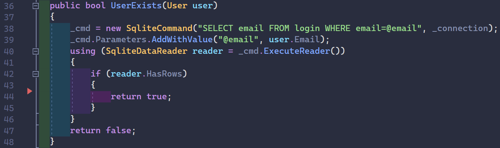
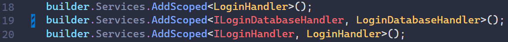

Et memory leak er når ens apllikation ikke tilbagekalder og disposer objekter, som tidligere er blevet alokkeret. Hvorfor bliver objekterne ikke tilbagekaldt? Det kan være hvis man ikke designer sine klasser ordentligt. F.eks hvis man hele tiden laver nye objekter, uden at lave en dispose på dem. Nogle objekter bliver automatisk disposed, andre gør ikke. Se nedenstående billede.

Her ses at vi bruger et using statement. Den sørger selv for, at dispose SqliteDataReader objektet.
Men én ting den ikke sørger får, er at dispose forbindelsen til databasen. Så hver gang vi køre metoden, vil
en ny SqliteConnection blive oprettet. Og den bliver aldrig disposed, da vi ikke kalder dens
dispose metode. Det er i øvrigt det samme ved SqliteCommmand. Se nedenstående billede.
Som vi kan se her, så disposer vi de objekter, som ikke bliver automatisk disposed af using udtrykket. Når jeg starter min microservice, så bruger den ca. 48 MB ram fra starten. Efter at kalde 10 POST requests til den, vil RAM forbruget stige til 58 MB, hvor den så ikke vil stige efter. Dog er der et andet problem med, at den alrig vil dealokere ned under 58 MB.
Med hjælp fra en anden gruppe, har jeg også fået lavet nogle interfaces, og jeg injecter også nogle klasser. Se nedestående billede.
